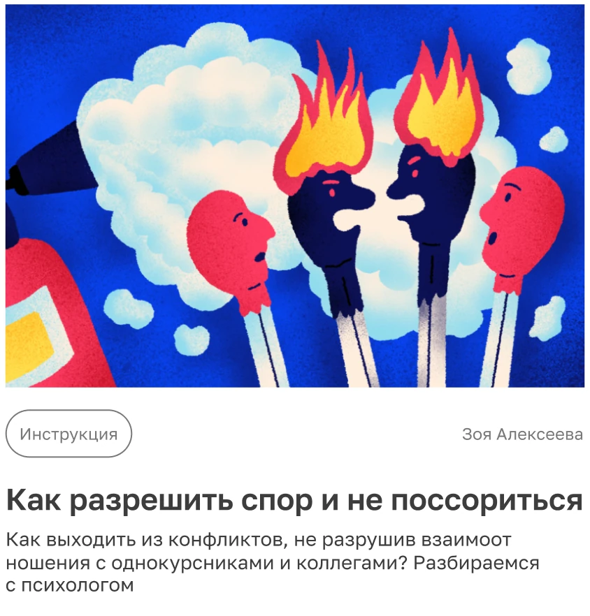

03 — Решения
Навигация в два измерения
В одной ленте тегов — два типа фильтров: профессия и формат. Можно выбрать сразу несколько, например «Моушн-дизайн и CG» + «Инструкция».
Профессия
Моушн-дизайн и CGUX/UI-дизайнГрафический дизайнВидео и киноИллюстрацияМенеджментСовременное искусство
Формат
БеседыИстории студентовИнтервьюИнструкцияАбсолютные списки
Компонент Card
Карточка отвечает на три вопроса
О чём статья? Какого формата? Кто автор? Достаточно, чтобы решить, стоит ли открывать.
- Обложка — одинаковые пропорции, яркое пятно на нейтральном фоне
- Теги-чипсы — профессия и формат, отдельный компонент
- Автор — справа, вторичным серым
- Заголовок — Title 2, Medium 20/24
- Лид — Body 14/16.8, максимум три строки

Связь со школой
Журнал — часть экосистемы
В шапке общая навигация школы: «Все курсы», «Бесплатно», «Дизайн-библиотека». От статьи до обучения — один клик. Заголовок страницы прямо говорит, зачем здесь журнал.

Спасибо
за просмотр
Нужно навести порядок в контенте и собрать дизайн-систему? Напишите — обсудим.

Наталья МалининаUX/UI-дизайнер